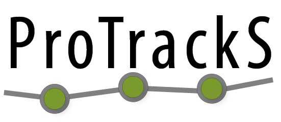

ProTrackS is a web-based service request system for the Center for Clinical and Transnational Science (CCTS).
ProTrackS provides the ability for you to request research and operational services from any of the CCTS foundations.
ProTrackS creates a CCTS ID for your projects so we can track the services and resources you need for your research projects.